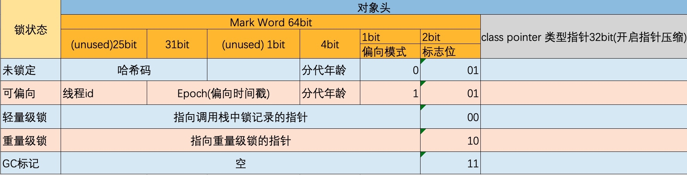

线程安全是并发编程中的重要关注点，应该注意到的是，造成线程安全问题的主要诱因有两点：
- 存在共享数据(也称临界资源)
- 存在多条线程共同操作共享数据。
为了解决并发安全的问题，大神们琢磨出被称为 互斥锁 的东西，它的作用如下：
当存在多个线程操作共享数据时，需要保证同一时刻有且只有一个线程在操作共享数据，其他线程必须等到该线程处理完数据后再进行
在 Java 中，关键字 synchronized可以保证在同一个时刻，只有一个线程可以执行某个方法或者某个代码块(主要是对方法或者代码块中存在共享数据的操作)，同时我们还应该注意到synchronized另外一个重要的作用，synchronized可保证一个线程的变化(主要是共享数据的变化)被其他线程所看到
1、synchronized的作用
Synchronized是Java中解决并发问题的一种最常用的方法，也是最简单的一种方法。Synchronized的作用主要有三个：
- 原子性：确保线程互斥的访问同步代码；
- 可见性：保证共享变量的修改能够及时可见
- 有序性：有效解决重排序问题，即 “一个unlock操作先行发生(happen-before)于后面对同一个锁的lock操作”；
2、synchronized的三种应用方式
synchronized关键字最主要有以下3种应用方式：
- 作用在实例方法时，锁对象便是对象实例（this）；
- 作用在静态方法时，锁对象便是对象的Class实例，因为Class数据存在于永久代，因此静态方法锁相当于该类的一个全局锁；
- 作用在某一个对象实例时，锁对象便是括号括起来的对象实例；
3、synchronized反编译
public class SyncDemo {
public void method() {
synchronized (SyncDemo.class) {
System.out.println("互斥");
}
}
}
> javap -v SyncDemo.class
...
public void method();
descriptor: ()V
flags: ACC_PUBLIC
Code:
stack=2, locals=3, args_size=1
0: ldc #2 // class com/goddess/base/SyncDemo
2: dup
3: astore_1
4: monitorenter
5: getstatic #3 // Field java/lang/System.out:Ljava/io/PrintStream;
8: ldc #4 // String 互斥
10: invokevirtual #5 // Method java/io/PrintStream.println:(Ljava/lang/String;)V
13: aload_1
14: monitorexit
15: goto 23
18: astore_2
19: aload_1
20: monitorexit
21: aload_2
22: athrow
23: return
...
重点看到第4行 ‘monitorenter’ 与第14行 ‘monitorexit’，分别是进入同步代码块与退出同步代码块。
眼尖的同学会看到第20行也有一个 ‘monitorexit’，那么与第14行的 ‘monitorexit’ 有什么区别呢？
第14行 为同步正常退出释放锁；第20行为发生异步退出释放锁
进入monitorenter时，被监视的对象就被成为 监视器锁（monitor）。当monitor被占用时就会处于锁定状态，线程执行monitorenter指令时尝试获取monitor的所有权。
monitorenter过程如下：
- 如果monitor的进入数为0，则该线程进入monitor，然后将进入数设置为1，该线程即为monitor的所有者；
- 如果线程已经占有该monitor，只是重新进入，则进入monitor的进入数加1；
- 如果其他线程已经占用了monitor，则该线程进入阻塞状态，直到monitor的进入数为0，再重新尝试获取monitor的所有权；
monitorexit过程如下：
执行monitorexit的线程必须是objectref所对应的monitor的所有者。指令执行时，monitor的进入数减1，如果减1后进入数为0，那线程退出monitor，不再是这个monitor的所有者。其他被这个monitor阻塞的线程可以尝试去获取这个 monitor 的所有权。
注意： Synchronized的语义底层是通过一个monitor的对象来完成，其实Object的 wait/notify等方法也依赖于monitor对象，这就是为什么只有在同步的块或者方法中才能调用wait/notify等方法，否则会抛出java.lang.IllegalMonitorStateException的异常的原因。
我们再看一种 synchronized 的同步方式
public class SyncDemo {
public synchronized void method() {
System.out.println("互斥");
}
}
>javap -v SyncDemo.class
public synchronized void method();
descriptor: ()V
flags: ACC_PUBLIC, ACC_SYNCHRONIZED
Code:
stack=2, locals=1, args_size=1
0: getstatic #2 // Field java/lang/System.out:Ljava/io/PrintStream;
3: ldc #3 // String 互斥
5: invokevirtual #4 // Method java/io/PrintStream.println:(Ljava/lang/String;)V
8: return
从编译的结果来看，方法的同步并没有通过指令 monitorenter 和 monitorexit 来完成（理论上其实也可以通过这两条指令来实现），不过相对于未被synchronized修饰的普通方法，其常量池中多了 ACC_SYNCHRONIZED 标示符。
jvm 在执行method方法的时候当方法调用时，调用指令将会检查方法的 ACC_SYNCHRONIZED 访问标志是否被设置，如果设置了，执行线程将先获取monitor，获取成功之后才能执行方法体，方法执行完后再释放monitor。在方法执行期间，其他任何线程都无法再获得同一个monitor对象。
4、synchronized 原理预备知识
查看java 对象头 ，图例如下，详情请查看二、JVM自动内存管理--java内存区域与内存溢出异常 中的 java 对象头部分

4.1、jvm 关于synchronized的参数配置
jvm 默认情况下 偏向锁的延迟是开启的，好像是4秒，可以通过如下命令查找到
UseBiasedLocking: jvm 默认开启偏向锁
UseHeavyMonitors：jvm 模式关闭重量级锁标记，如果指定了-XX:+UseHeavyMonitors，代表禁用偏向锁和轻量级锁
> java -XX:+PrintFlagsFinal -version
关闭延迟开启偏向锁 -XX:BiasedLockingStartupDelay=0
禁止偏向锁 -XX:-UseBiasedLocking
启用偏向锁 -XX:+UseBiasedLocking
4.2、对象头中Mark Word与线程中Lock Record
在线程进入同步代码块的时候，如果此同步对象没有被锁定，即它的锁标志位是01，则虚拟机首先在当前线程的栈中创建我们称之为“锁记录（Lock Record）”的空间，用于存储锁对象的Mark Word的拷贝，官方把这个拷贝称为Displaced Mark Word。整个Mark Word及其拷贝至关重要。
Lock Record是线程私有的数据结构，每一个线程都有一个可用Lock Record列表，同时还有一个全局的可用列表。每一个被锁住的对象Mark Word都会和一个Lock Record关联（对象头的MarkWord中的Lock Word指向Lock Record的起始地址），同时Lock Record中有一个Owner字段存放拥有该锁的线程的唯一标识（或者object mark word），表示该锁被这个线程占用。
4.3、监视器（Monitor）
那什么是Monitor？可以把它理解为 一个同步工具，也可以描述为 一种同步机制，它通常被描述为一个对象。
每一个Java对象都有成为Monitor的潜质，因为在Java的设计中 ，每一个Java对象自打娘胎里出来就带了一把看不见的锁，它叫做 内部锁 或者 Monitor 锁。
也就是通常说Synchronized的对象锁，MarkWord锁标识位为10，其中指针指向的是Monitor对象的起始地址。在Java虚拟机（HotSpot）中，Monitor是由ObjectMonitor实现的，其主要数据结构如下：
ObjectMonitor() {
_header = NULL;
_count = 0; // 记录个数
_waiters = 0,
_recursions = 0;
_object = NULL;
_owner = NULL;
_WaitSet = NULL; // 处于wait状态的线程，会被加入到_WaitSet
_WaitSetLock = 0 ;
_Responsible = NULL ;
_succ = NULL ;
_cxq = NULL ;
FreeNext = NULL ;
_EntryList = NULL ; // 处于等待锁block状态的线程，会被加入到该列表
_SpinFreq = 0 ;
_SpinClock = 0 ;
OwnerIsThread = 0 ;
}
ObjectMonitor中有两个队列，_WaitSet 和 _EntryList，用来保存ObjectWaiter对象列表（ 每个等待锁的线程都会被封装成ObjectWaiter对象 ），_owner指向持有ObjectMonitor对象的线程，
当锁膨胀为重量级锁的时候，会有以下操作：
- 首先会进入 _EntryList 集合，当线程获取到对象的monitor后，进入 _Owner区域并把monitor中的owner变量设置为当前线程，同时monitor中的计数器count加1；
- 若线程调用 wait() 方法，将释放当前持有的monitor，owner变量恢复为null，count自减1，同时该线程进入 WaitSet集合中等待被唤醒；
- 若当前线程执行完毕，也将释放monitor（锁）并复位count的值，以便其他线程进入获取monitor(锁)；
由于wait/notify 会使用到Monitor锁，所以在同步代码块中使用 wait/notify后，互斥锁就会膨胀为重量级锁。
5、synchronized 加锁以及锁膨胀流程
这里给出来 synchronized 加锁的流程图如下，此处纯属个人理解，不保证全部正确：
 Synchronized 关键字流程 -1-
Synchronized 关键字流程 -1-
6、锁的优化
从JDK6开始，就对synchronized的实现机制进行了较大调整，包括使用JDK5引进的CAS自旋之外，还增加了自适应的CAS自旋、锁消除、锁粗化、偏向锁、轻量级锁这些优化策略。由于此关键字的优化使得性能极大提高，同时语义清晰、操作简单、无需手动关闭，所以推荐在允许的情况下尽量使用此关键字，同时在性能上此关键字还有优化的空间。
6.1、偏向锁
偏向锁是Java 6之后加入的新锁，它是一种针对加锁操作的优化手段，经过研究发现，在大多数情况下，锁不仅不存在多线程竞争，而且总是由同一线程多次获得，因此为了减少同一线程获取锁(会涉及到一些CAS操作,耗时)的代价而引入偏向锁。
偏向锁的核心思想是，如果一个线程获得了锁，那么锁就进入偏向模式，此时Mark Word 的结构也变为偏向锁结构，当这个线程再次请求锁时，无需再做任何同步操作，即获取锁的过程，这样就省去了大量有关锁申请的操作，从而也就提供程序的性能。
当一个线程访问同步块并获取锁时，会在对象头和栈帧中的锁记录里存储锁偏向的线程ID，以后该线程进入和退出同步块时不需要花费CAS操作来争夺锁资源，只需要检查是否为偏向锁、锁标识为ThreadID即可，处理流程如下：
- 1、检测Mark Word是否为可偏向状态，即是否为偏向锁1，锁标识位为01；
- 2、若为可偏向状态，则测试线程ID是否为当前线程ID，如果是，则执行步骤（5），否则执行步骤（3）；
- 3、如果测试线程ID不为当前线程ID，则通过CAS操作竞争锁，竞争成功，则将Mark Word的线程ID替换为当前线程ID，否则执行线程（4）；
- 4、通过CAS竞争锁失败，证明当前存在多线程竞争情况，当到达全局安全点，获得偏向锁的线程被挂起，偏向锁升级为轻量级锁，然后被阻塞在安全点的线程继续往下执行同步代码块；
- 5、执行同步代码块；
所以，对于没有锁竞争的场合，偏向锁有很好的优化效果，毕竟极有可能连续多次是同一个线程申请相同的锁。
但是对于锁竞争比较激烈的场合，偏向锁就失效了，因为这样场合极有可能每次申请锁的线程都是不相同的，因此这种场合下不应该使用偏向锁，否则会得不偿失，需要注意的是，偏向锁失败后，并不会立即膨胀为重量级锁，而是先升级为轻量级锁。下面我们接着了解轻量级锁。
6.2、偏向锁的释放
偏向锁的释放采用了 一种只有竞争才会释放锁的机制，线程是不会主动去释放偏向锁，需要等待其他线程来竞争。偏向锁的撤销需要 等待全局安全点（这个时间点是上没有正在执行的代码）。其步骤如下：
- 1、暂停拥有偏向锁的线程；
- 2、判断锁对象是否还处于被锁定状态，否，则恢复到无锁状态（01），以允许其余线程竞争。是，则挂起持有锁的当前线程，并将指向当前线程的锁记录地址的指针放入对象头Mark Word，升级为轻量级锁状态（00），然后恢复持有锁的当前线程，进入轻量级锁的竞争模式；
### 6.3、轻量级锁
倘若偏向锁失败，虚拟机并不会立即升级为重量级锁，它还会尝试使用一种称为轻量级锁的优化手段(1.6之后加入的)，此时Mark Word 的结构也变为轻量级锁的结构。
引入轻量级锁的主要目的是 在没有多线程竞争的前提下，减少传统的重量级锁使用操作系统互斥量产生的性能消耗
对于轻量级锁，其性能提升的依据是 “对于绝大部分的锁，在整个生命周期内都是不会存在竞争的”，如果打破这个依据则除了互斥的开销外，还有额外的CAS操作，因此在有多线程竞争的情况下，轻量级锁比重量级锁更慢。
当关闭偏向锁功能或者多个线程竞争偏向锁导致偏向锁升级为轻量级锁，则会尝试获取轻量级锁过程如下：
1、在线程进入同步块时，如果同步对象锁状态为无锁状态（锁标志位为“01”状态，是否为偏向锁为“0”），虚拟机首先将在当前线程的栈帧中建立一个名为锁记录（Lock Record）的空间，用于存储锁对象目前的Mark Word的拷贝，官方称之为 Displaced Mark Word。
2、拷贝对象头中的Mark Word复制到锁记录（Lock Record）中；
3、拷贝成功后，虚拟机将使用CAS操作尝试将对象Mark Word中的Lock Word更新为指向当前线程Lock Record的指针，并将Lock record里的owner指针指向object mark word。如果更新成功，则执行步骤（4），否则执行步骤（5）；
4、如果这个更新动作成功了，那么当前线程就拥有了该对象的锁，并且对象Mark Word的锁标志位设置为“00”，即表示此对象处于轻量级锁定状态
5、如果这个更新操作失败了，虚拟机首先会检查对象Mark Word中的Lock Word是否指向当前线程的栈帧，如果是，就说明当前线程已经拥有了这个对象的锁，那就可以直接进入同步块继续执行。否则说明多个线程竞争锁，进入自旋执行（3），若自旋结束时仍未获得锁，轻量级锁就要膨胀为重量级锁，锁标志的状态值变为“10”，Mark Word中存储的就是指向重量级锁（互斥量）的指针，当前线程以及后面等待锁的线程也要进入阻塞状态。
6.3.1、轻量级锁的释放
轻量级锁的释放也是通过CAS操作来进行的，主要步骤如下：
- 1、通过CAS操作尝试把线程中复制的Displaced Mark Word对象替换当前的Mark Word；
- 2、如果替换成功，整个同步过程就完成了，恢复到无锁状态（01）；
- 3、如果替换失败，说明有其他线程尝试过获取该锁（此时锁已膨胀），那就要在释放锁的同时，唤醒被挂起的线程；
6.3.2、为什么升级为轻量锁时要把对象头里的Mark Word复制到线程栈的锁记录中呢？
因为在申请对象锁时需要以该值作为CAS的比较条件，同时在升级到重量级锁的时候，能通过这个比较判定是否在持有锁的过程中此锁被其他线程申请过，如果被其他线程申请了，则在释放锁的时候要唤醒被挂起的线程。
6.3.3、为什么会尝试CAS不成功以及什么情况下会不成功？
CAS本身是不带锁机制的，其是通过比较而来。
假设如下场景：线程A和线程B都在对象头里的锁标识为无锁状态进入，那么如线程A先更新对象头为其锁记录指针成功之后，线程B再用CAS去更新，就会发现此时的对象头已经不是其操作前的对象HashCode了，所以CAS会失败。也就是说，只有两个线程并发申请锁的时候会发生CAS失败。
然后线程B进行CAS自旋，等待对象头的锁标识重新变回无锁状态或对象头内容等于对象HashCode（因为这是线程B做CAS操作前的值），这也就意味着线程A执行结束（参见后面轻量级锁的撤销，只有线程A执行完毕撤销锁了才会重置对象头），此时线程B的CAS操作终于成功了，于是线程B获得了锁以及执行同步代码的权限。
如果线程A的执行时间较长，线程B经过若干次CAS时钟没有成功，则锁膨胀为重量级锁，即线程B被挂起阻塞、等待重新调度。
6.4、自旋锁
线程的阻塞和唤醒需要CPU从用户态转为核心态，频繁的阻塞和唤醒对CPU来说是一件负担很重的工作，势必会给系统的并发性能带来很大的压力。同时我们发现在许多应用上面，对象锁的锁状态只会持续很短一段时间，为了这一段很短的时间频繁地阻塞和唤醒线程是非常不值得的。
所以引入自旋锁，何谓自旋锁？
所谓自旋锁，就是指当一个线程尝试获取某个锁时，如果该锁已被其他线程占用，就一直循环检测锁是否被释放，而不是进入线程挂起或睡眠状态。
自旋锁适用于锁保护的临界区很小的情况，临界区很小的话，锁占用的时间就很短。自旋等待不能替代阻塞，虽然它可以避免线程切换带来的开销，但是它占用了CPU处理器的时间。如果持有锁的线程很快就释放了锁，那么自旋的效率就非常好，反之，自旋的线程就会白白消耗掉处理的资源，它不会做任何有意义的工作，典型的占着茅坑不拉屎，这样反而会带来性能上的浪费。所以说，自旋等待的时间（自旋的次数）必须要有一个限度，如果自旋超过了定义的时间仍然没有获取到锁，则应该被挂起。
自旋锁在JDK 1.4.2中引入，默认关闭，但是可以使用-XX:+UseSpinning开开启，在JDK1.6中默认开启。同时自旋的默认次数为10次，可以通过参数-XX:PreBlockSpin来调整
6.5、自适应自旋锁
JDK 1.6引入了更加聪明的自旋锁，即自适应自旋锁。所谓自适应就意味着自旋的次数不再是固定的，它是由前一次在同一个锁上的自旋时间及锁的拥有者的状态来决定。那它如何进行适应性自旋呢？
线程如果自旋成功了，那么下次自旋的次数会更加多，因为虚拟机认为既然上次成功了，那么此次自旋也很有可能会再次成功，那么它就会允许自旋等待持续的次数更多。反之，如果对于某个锁，很少有自旋能够成功，那么在以后要或者这个锁的时候自旋的次数会减少甚至省略掉自旋过程，以免浪费处理器资源。
6.6、锁消除
消除锁是虚拟机另外一种锁的优化，它的依据是逃逸分析的数据支持，Java虚拟机在JIT编译时(可以简单理解为当某段代码即将第一次被执行时进行编译，又称即时编译)，通过对运行上下文的扫描，去除不可能存在共享资源竞争的锁，通过这种方式消除没有必要的锁，可以节省毫无意义的请求锁时间，如下StringBuffer的append是一个同步方法，但是在add方法中的StringBuffer属于一个局部变量，并且不会被其他线程所使用，因此StringBuffer不可能存在共享资源竞争的情景，JVM会自动将其锁消除。
6.7、锁粗化
在使用同步锁的时候，需要让同步块的作用范围尽可能小—仅在共享数据的实际作用域中才进行同步，这样做的目的是为了使需要同步的操作数量尽可能缩小，如果存在锁竞争，那么等待锁的线程也能尽快拿到锁。
在大多数的情况下，上述观点是正确的。但是如果一系列的连续加锁解锁操作，可能会导致不必要的性能损耗，所以引入锁粗话的概念。
锁粗话概念比较好理解，就是将多个连续的加锁、解锁操作连接在一起，扩展成一个范围更大的锁
举个例子来说： vector每次add的时候都需要加锁操作，JVM检测到对同一个对象（vector）连续加锁、解锁操作，会合并一个更大范围的加锁、解锁操作，即加锁解锁操作会移到for循环之外。